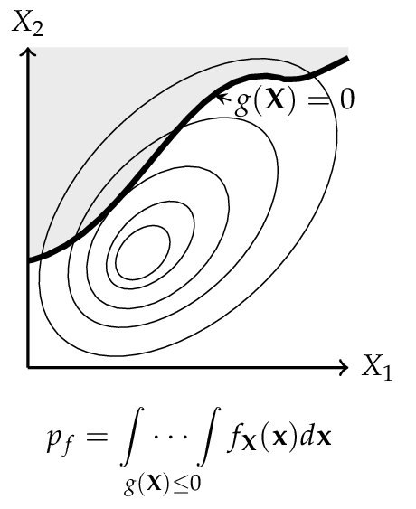
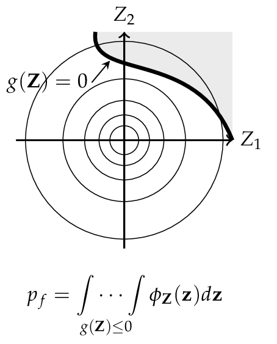
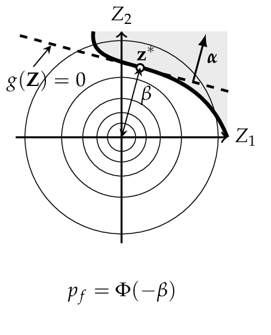

FORM, SORM and design-point diagnostics#
First-order reliability method (FORM)#
Let \(\mathbf{Z}\) be a set of uncorrelated and standardized normally distributed random variables \(( Z_1 ,\dots, Z_n )\) in the normalized z-space, corresponding to any set of random variables \(\mathbf{X} = ( X_1 , \dots , X_n )\) in the physical x-space, then the limit-state surface in x-space is also mapped on the corresponding limit-state surface in z-space.
According to Definition (10), the reliability index \(\beta\) is the minimum distance from the z-origin to the failure surface. This distance \(\beta\) can directly be mapped to a probability of failure
this corresponds to a linearization of the failure surface. The linearization point is the design point \(\mathbf{z}^*\). This procedure is called the first-order reliability method (FORM), and \(\beta\) is the first-order reliability index. [Madsen2006]
{kind=link}

Representation of a physical space with a set \(\mathbf{X}\) of any two random variables. The shaded area denotes the failure domain and \(g(\mathbf{X}) = 0\) the failure surface.
{kind=link}

After transformation in the normalized space, the random variables \(\mathbf{X}\) are now uncorrelated and standardized normally distributed, also the failure surface is transformed into \(g(\mathbf{Z}) = 0\).
{kind=link}

FORM corresponds to a linearization of the failure surface \(g(\mathbf{Z}) = 0\). Performing this method, the design point \(\mathbf{z}^*\) and the reliability index \(\beta\) can be computed.
Second-order reliability method (SORM)#
FORM approximates the failure surface \(g(\mathbf{Z}) = 0\) by a tangent hyperplane at the design point. When the failure surface has significant curvature at the design point, this linear approximation can over- or under-estimate \(p_f\). The Second-Order Reliability Method (SORM) improves on FORM by fitting a quadratic surface (paraboloid) to \(g(\mathbf{Z}) = 0\) at the design point, thereby capturing second-order effects [Baker2010].
Quadratic approximation in rotated space#
Starting from the FORM design point \(\mathbf{z}^*\) and the unit direction vector \(\boldsymbol{\alpha} = -\mathbf{z}^*/\beta\), the standard normal space is rotated so that \(\mathbf{z}^*\) lies at distance \(\beta\) along the last axis. Let \(\mathbf{R}\) denote the orthonormal rotation matrix constructed by Gram–Schmidt orthonormalization with \(\boldsymbol{\alpha}\) in the last row, and let \(\mathbf{u}' = \mathbf{R}\,\mathbf{z}\) be coordinates in the rotated space. In these coordinates the failure surface is approximated as:
where \(\kappa_i\) are the principal curvatures of the failure surface at the design point and \(u'_n\) is the coordinate along the design-point direction. Positive curvature means the failure surface curves away from the origin (conservative with respect to FORM); negative curvature means it curves towards the origin (unconservative).
The key task is to determine the principal curvatures \(\kappa_i\). PySTRA provides two approaches.
Curve-fitting#
The default method (fit="curve") obtains the curvatures from the
Hessian matrix of the limit-state function. The Hessian \(\mathbf{H}\)
of \(g\) at the design point \(\mathbf{z}^*\) is computed by finite
differences of the gradient that is already available from FORM. This
matrix is then rotated and normalized:
The principal curvatures \(\kappa_i\) are the eigenvalues of the leading \((n{-}1) \times (n{-}1)\) sub-matrix of \(\mathbf{A}\) (i.e.the block excluding the last row and column, which corresponds to the design-point direction). These curvatures are symmetric: the paraboloid has the same curvature on both sides of each principal axis.
The Breitung approximation [Breitung1984] then gives the second-order failure probability:
This result is asymptotically exact as \(\beta \to \infty\).
Point-fitting#
An alternative method (fit="point") determines the curvatures by
locating fitting points directly on the failure surface, without computing
the Hessian. For each of the \(n{-}1\) principal axes in the rotated
space, a pair of trial points is placed at \(u'_i = \pm k\beta\)
(where \(k\) is an adaptive step coefficient), with all other
off-axis coordinates set to zero and \(u'_n = \beta\). Newton
iteration along the \(u'_n\)-direction then drives each point onto
the surface \(g = 0\).
Once a fitting point has converged, its curvature is computed from the displacement along the design-point direction:
Because points are fitted on both the positive and negative sides of each axis, the method yields asymmetric curvatures \(\kappa_i^+\) and \(\kappa_i^-\). The generalized Breitung formula for asymmetric curvatures is:
When the curvatures are symmetric (\(\kappa_i^+ = \kappa_i^-\)), this reduces to the standard Breitung formula (2).
Hohenbichler–Rackwitz modification#
The Breitung formula is asymptotically exact for large \(\beta\) but can be inaccurate for moderate values. Hohenbichler and Rackwitz [Hohenbichler1988] proposed replacing \(\beta\) in the curvature terms with:
where \(\phi\) is the standard normal PDF. The quantity \(\psi\) is the conditional mean of the standard normal distribution given that it exceeds \(\beta\), and provides a better local expansion for moderate reliability indices. The modified formula is:
with the obvious extension to asymmetric curvatures from point-fitting. Both the standard and modified Breitung results are reported by PySTRA.
Validity and method comparison#
The Breitung and Hohenbichler–Rackwitz formulas require each curvature term in the product to be positive. For the standard Breitung formula this means \(\kappa_i > -1/\beta\); for the modified formula, \(\kappa_i > -1/\psi\). If any curvature violates this bound the approximating paraboloid opens towards the origin and the second-order approximation is invalid.
The two fitting methods offer different trade-offs:
Curve-fitting requires fewer limit-state evaluations (one gradient perturbation per random variable) and produces symmetric curvatures. It is well suited to smooth failure surfaces where the curvature is approximately the same on both sides of the design point.
Point-fitting requires more evaluations (Newton iteration for each of \(2(n{-}1)\) fitting points) but captures asymmetric curvature. This is advantageous when the failure surface has markedly different shapes on each side of the design point, as can occur with non-linear limit-state functions.
Strong Maximum Test#
A converged local FORM design point need not represent every important failure region. The Strong Maximum Test [DutfoyLebrun2006] probes an enlarged sphere around the origin for failure points outside the candidate’s vicinity. PySTRA implements the independent standard normal case described by OpenTURNS. See Checking a FORM design point for geometric examples and Strong Maximum Test for the API.
Sphere geometry#
Let the candidate be \(u^*\), with \(\beta=\|u^*\|>0\), and assume that the origin is strictly safe. A density ratio \(0<\varepsilon<1\) defines the relevant normal-density radius \(r_\varepsilon\):
With enlargement factor \(\tau>1\), the sampled sphere has radius
Independent Gaussian directions normalized to length \(r\) give uniform sphere samples. A point is near the candidate when
Crossing near/far with safe/failure gives four retained point groups. PySTRA classifies failure by \(g<0\). Far failure points are possible restart locations for additional design-point searches, not optimized design points themselves. The magnitude of \(g\) does not measure a region’s probability importance.
Cap probability and evaluation budget#
The reference detection cap has half-angle \(\theta=\arccos(r_\varepsilon/r)\), which differs from the candidate vicinity angle \(\arccos(\beta/r)\). For dimension \(n>1\), its normalized surface area is
where \(I\) is the regularized incomplete beta function. In one dimension the sphere consists of two points and \(p_\mathrm{cap}=1/2\). For \(N\) independent samples, nominal cap-detection confidence is
PySTRA rounds upward to meet the requested nominal confidence; OpenTURNS’
reference implementation rounds to the nearest integer. Users can specify
confidence or a fixed count, with a hard max_points budget checked before
sphere evaluation. The total is \(N+2\) point evaluations including the
origin and boundary checks. The cap can become small in high dimensions,
so inspect the budget before using an expensive structural model.
Interpretation and limitations#
Nominal confidence is a sampling statement about hitting a fixed cap under the test’s local-plane and failure-region extent assumptions. It is not a posterior probability that FORM is correct, a failure-probability estimate, or a bound on approximation error. A bounded failure island entirely inside the sphere cannot be detected, regardless of sample count. The tutorial constructs such an island closer to the origin than the supplied candidate.
Use the diagnostic on individual SystemFORM.component_results to look
for missed regions within each component. Checking every component does not
validate the system probability. With a non-Gaussian copula, use Rosenblatt
so that the sphere geometry and cap probability apply in independent normal
space. Generalized Student-t Nataf would require different density-radius
geometry and is not supported by this implementation.
Use this method: Running FORM and SORM · Comparing FORM, SORM and simulation · Reliability algorithms and results
For coordinate conventions, see Notation and probability spaces.